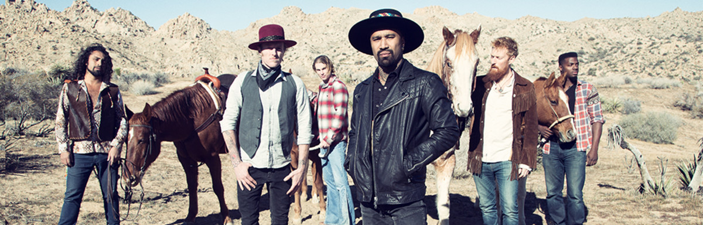

Nahko and Medicine For the People

About
Band Info
| Name |
Instrument |
Sign |
| Nahko Bear |
Guitar, Piano |
Aquarius |
| Chitty |
Drums |
Pisces |
| TJ |
Trombone |
Aries |
| Joe |
Guitar |
Capricorn |
Quotes
"I dreamed of my future...what would it be like to always have clean water. If we left
the trees standing and they filtered the air and we breathed it in deeply."
"Don't waste your hate. Rather gather and create. Be of service, be a sensible person.
Use your words and don't be nervous. You can do this, you've got purpose. Find your medicine, and use it."
"We are the ones we've been waiting for."
"You gotta put down the weight
You gotta get out of your way"
"What I see, in you
A young tree bearing fruit
A place to start
Don't hide behind your heart"
"I've come to build a bridge
So come, let's build"